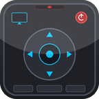

Smart TV & Android TV Wi-Fi remote control with pairing and touchpad for iOS 5–10
TV Remote turns your iOS 5–10 iPhone, iPod touch or iPad into a Wi-Fi remote control for Android TV / Google TV (TLS Remote v2 protocol with 6-digit PIN pairing + ADB fallback), Roku (ECP), Samsung Smart TV, LG WebOS and Sony Bravia. Includes automatic mDNS/SSDP discovery, tactile D-Pad, swipe touchpad, volume/channel rockers, media transport and remote keyboard input.
Unofficial apps by samcejko, not affiliated with or endorsed by Twitch, Google, Apple, TikTok, Instagram, Meta, Spotify, Kick, NVIDIA, Mojang, Microsoft, OpenRouter, Vine, X, diVine or the Moonlight, Sunshine and Apollo projects.